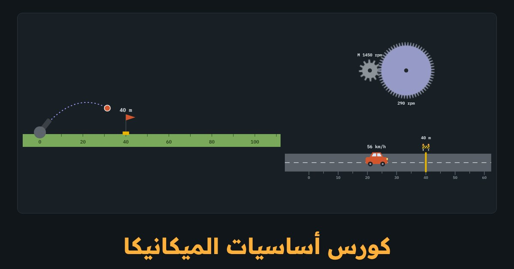

كورس · 11 درسًا · 11 لعبة تفاعليةللمبتدئين
كورس أساسيات الميكانيكا
الفيزياء التي تقف خلف كل محرك وكل حمل، بلا حفظ. كل فكرة في سطر وصورة، وفي كل درس لعبة: تفرمل سيارة، وترمي كرة على هدف، وتوازن أرجوحة، وترفع سيارة بالكريك. وفي النهاية تحسب محرك ونش حقيقي.
أول درسين مفتوحان للجميع

المحتوى
11 درسًا بالترتيب، وفي كل درس لعبة
كل درس فكرة في سطر وصورة تفهمها من نظرة، ثم لعبة من 3 جولات وأسئلة قصيرة. الدرس الأخير مشروع وامتحان نهائي.
- من أين تبدأ الميكانيكا؟ الكميات والوحدات والمتجهاتمفتوح للجميع
- الميكانيكا = الحركة والقوة
- 3 كميات يُبنى عليها كل شيء
- الكتلة ليست الوزن
- قياسي أم متجه؟
- محاكيملعب المتجهات: اجمع قوتين
- أسئلةأسئلة الدرس
- السرعة والعجلة
- المسافة والإزاحة
- السرعة
- العجلة = تغيّر السرعة
- 3 معادلات تحلّ أي مسألة
- مسافة الفرامل
- محاكيفرمل السيارة لتقف على الخط
- أسئلةأسئلة الدرس
- السقوط الحر والمقذوفات
- الجاذبية = عجلة ثابتة
- الريشة والمطرقة
- السقوط من ارتفاع
- المقذوف = حركتان في الوقت نفسه
- أفضل زاوية رمي
- محاكيارمِ الكرة وأصب الهدف
- أسئلةأسئلة الدرس
- القوة وقوانين نيوتن
- القوة = دفع أو شد
- القانون الأول: القصور الذاتي
- القانون الثاني: F = m·a
- القانون الثالث: الفعل ورد الفعل
- القوة المحصّلة
- محاكيادفع الصندوق ليصل في 4 ثوانٍ
- أسئلةأسئلة الدرس
- الوزن والاحتكاك والسطح المائل
- الوزن والقوة العمودية
- الاحتكاك
- معامل الاحتكاك μ
- الاحتكاك صديقك
- السطح المائل
- محاكيجد زاوية الانزلاق على المنحدر
- أسئلةأسئلة الدرس
- الشغل والطاقة والقدرة
- الشغل
- طاقة الوضع وطاقة الحركة
- الطاقة لا تفنى
- القدرة = الشغل في الزمن
- الكفاءة
- محاكيحلقة الملاهي: أقل ارتفاع يكفي
- أسئلةأسئلة الدرس
- كمية الحركة والتصادم
- كمية الحركة
- في التصادم كمية الحركة محفوظة
- مرن أم ملتصق؟
- الدفع: لماذا يحميك الإيرباج
- محاكياجعل العربتين تتوقفان بعد التصادم
- أسئلةأسئلة الدرس
- العزم والروافع والاتزان
- العزم = قوة تُدير
- أين تمسك؟
- الرافعة
- شرطا الاتزان
- العزم والمحرك
- محاكيوازن الأرجوحة
- أسئلةأسئلة الدرس
- الحركة الدائرية والتروس
- الدوران والـ rpm
- السرعة على الطرف
- القوة المركزية
- التروس والسيور
- القدرة في الدوران
- محاكياختر التروس للسرعة والعزم
- أسئلةأسئلة الدرس
- الضغط والهيدروليك
- الضغط = قوة على مساحة
- الوحدات
- ضغط السوائل
- قاعدة باسكال
- أين تجدها
- محاكيارفع سيارة بالكريك الهيدروليك
- أسئلةأسئلة الدرس
- المشروع: اختر محركًا لونش + الامتحان النهائي
- المسألة
- الخطة
- ما تعلّمته
- محاكياحسب محرك الونش خطوة بخطوة
- أسئلةأسئلة الدرس
- أسئلةالامتحان النهائي (18 سؤالًا)
الكورس بالأرقام
11درسًا من الوحدات حتى اختيار المحرك
11لعبة تفاعلية، كل لعبة 3 جولات
84سؤالًا في الدروس والامتحان النهائي
80%للنجاح وشهادة إتمام
الميكانيكا
ماذا ستتعلّم
- تحوّل الوحدات وتفرّق بين الكتلة والوزن، وتجمع القوى كمتجهات
- تحسب السرعة والعجلة ومسافة الفرامل، ومسار أي جسم يُرمى
- تطبّق قوانين نيوتن الـ 3 وتحسب الاحتكاك على الأرض وعلى المنحدر
- تحسب الشغل والطاقة والقدرة بالوات والحصان، والكفاءة
- تفهم العزم والروافع والتروس، والعلاقة P = T·ω المكتوبة على لوحة بيانات أي محرك
- تحسب الضغط وقوة الكريك الهيدروليك، وتختار محرك ونش من الصفر
لمن
لمن هذا الكورس
- لمن يريد فهم الفيزياء التي تقف خلف الماكينات بلا معادلات معقّدة
- لفنيي الكهرباء والصيانة الذين يريدون فهم الحمل الذي يحمله المحرك
- لطلاب الدبلومات والهندسة كمراجعة سريعة وممتعة
- لا تحتاج أي خبرة سابقة
أسئلة متكررة
قبل أن تسأل
هل أحتاج رياضيات قوية؟
لا. كل معادلة يصحبها مثال بالأرقام، وكل الحسابات ضرب وقسمة وجذر بالآلة الحاسبة.
هل تعمل الألعاب على الموبايل؟
نعم. كل الألعاب تعمل في المتصفح، وتحرّك فيها السلايدر بإصبعك.
هل توجد شهادة؟
نعم. عند إنهاء جميع الدروس والامتحان النهائي (80% أو أكثر)، تصدر شهادة إتمام كورس من صفحة حسابك.
جاهز لتفرمل أول سيارة؟
أول درسين مفتوحان للجميع، ويُفتح الكورس كله عند شرائه. تقدّمك محفوظ.